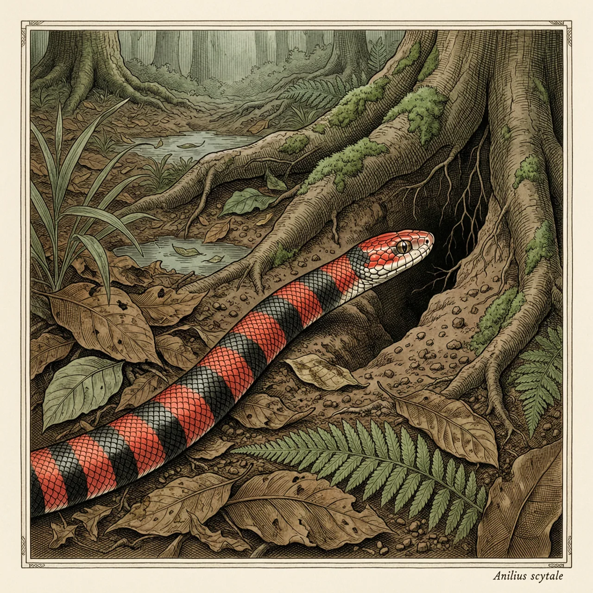
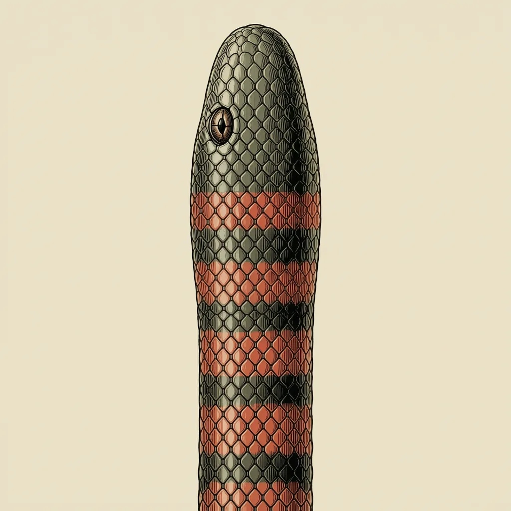

筒蛇是南美洲的一种小型穴居蛇，平均身长只有70公分，红黑相间，通体像一截粗细均匀的管子。它靠这套身型在表土与落叶层里取食蚓螈、洞栖蛇和蛙类；它是卵胎生，幼体直接产出。更少见的是，它身上还留着蛇类退化的骨盆痕迹。
在亚马逊雨林潮湿的表土和落叶层下面，一条70公分长的蛇慢慢穿行，身体从头到尾一般粗，像一截埋在土里的红黑管子。筒蛇的分布贴着南美洲的湿热地带：亚马逊雨林、圭亚那一带，一直到特立尼达和多巴哥。它身体笔直、各段粗细相仿，尾部短小，眼睛小到藏在头部大鳞之下——这些构造都指向同一种生活：在土里过日子，松软潮湿的土层是前提。
筒蛇的生存方式写在它的食谱里：甲虫、蚓螈、小型洞栖蛇、鱼类和蛙类。其中最对得上它构造的是蚓螈——一种没有腿、终生钻土生活的两栖动物，和筒蛇在同一个土层里进出。它能吃下与自己同样贴着土走的猎物，靠的正是这套笔直匀称的身型。它是卵胎生的蛇，幼体直接产出而不是产卵。
多数人第一眼看筒蛇，会把它归到红黑环纹、要小心那一档。它确实常被联想成蝮蛇一类的毒蛇，历史上甚至被拿来当作蝮蛇类起源的论据。但按今天的分类，它自成一个单型科、单型属，并不属于蝮蛇那一支。更硬的线索在身体内部：蛇类普遍退化掉的骨盆，筒蛇身上还留着痕迹，连泄殖腔都突出到可以被观察到。
